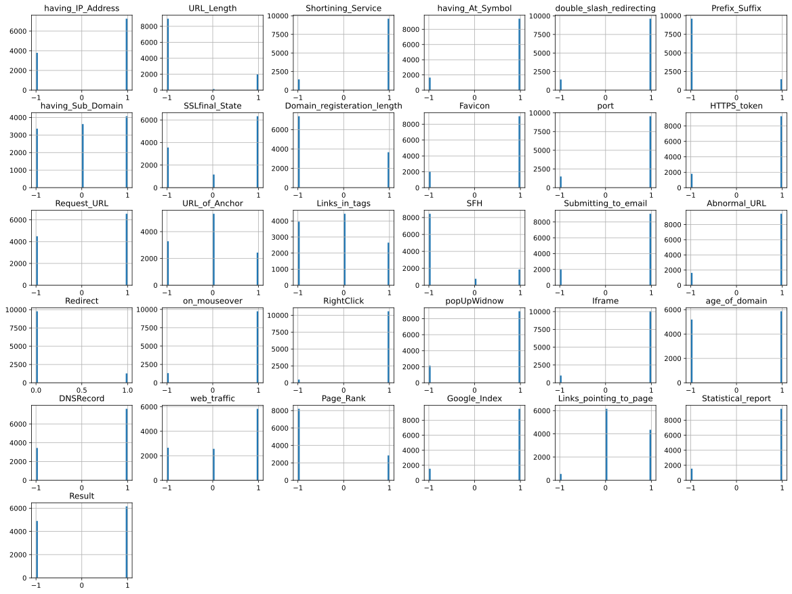
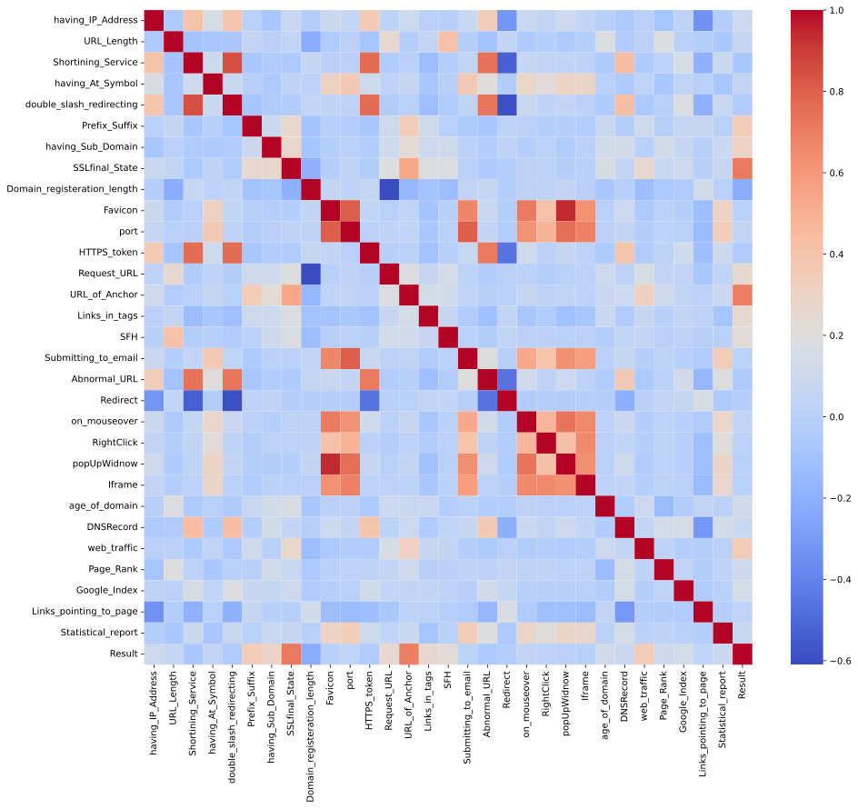
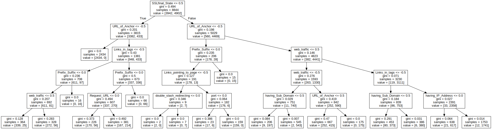
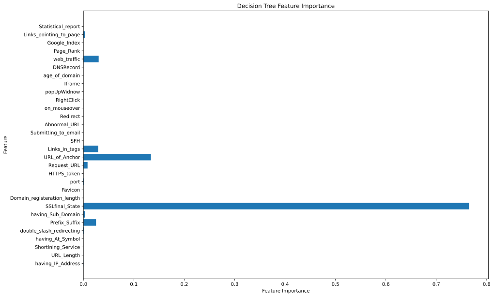
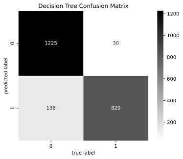
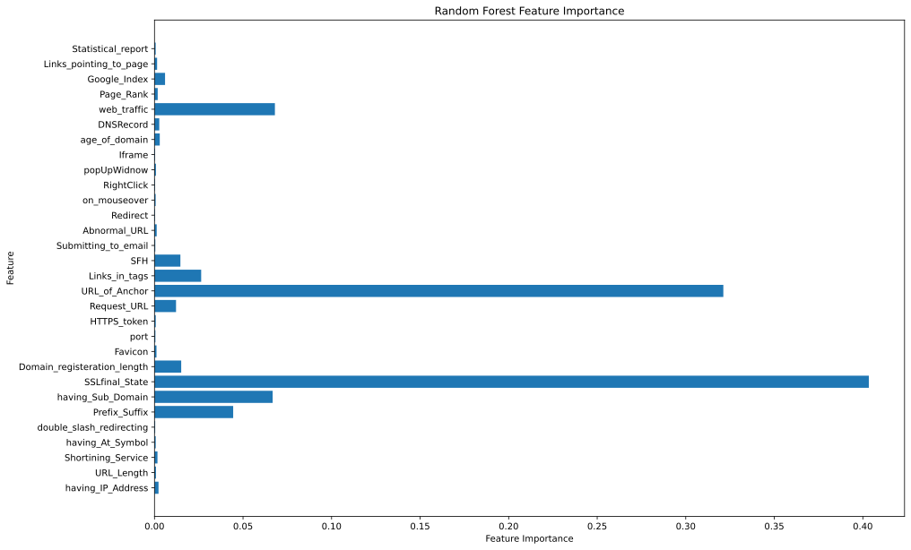
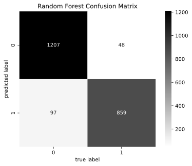
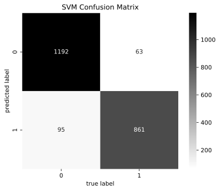
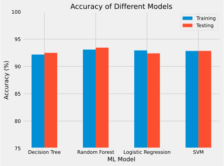

#importing basic packages
import pandas as pd
import numpy as np
import matplotlib.pyplot as plt
import seaborn as sns
from scipy.io import arffZach Fechko
Finding Phishing Websites Using Machine Learning
Introduction
What is Phishing
The dataset gives each category a value of -1, 0, or 1
- -1 signifies a phishing website
- 0 signifies a website doesn’t contain a given property
- 1 signifies a legitimate website
#reading in the dataset from arff file
data = arff.loadarff('data/Training Dataset.arff')
df = pd.DataFrame(data[0])
#convert values with b'1' to 1 and b'-1' to -1
df.replace(b'1', 1, inplace=True)
df.replace(b'-1', -1, inplace=True)
df.replace(b'0', 0, inplace=True)
df.head()| having_IP_Address | URL_Length | Shortining_Service | having_At_Symbol | double_slash_redirecting | Prefix_Suffix | having_Sub_Domain | SSLfinal_State | Domain_registeration_length | Favicon | ... | popUpWidnow | Iframe | age_of_domain | DNSRecord | web_traffic | Page_Rank | Google_Index | Links_pointing_to_page | Statistical_report | Result | |
|---|---|---|---|---|---|---|---|---|---|---|---|---|---|---|---|---|---|---|---|---|---|
| 0 | -1 | 1 | 1 | 1 | -1 | -1 | -1 | -1 | -1 | 1 | ... | 1 | 1 | -1 | -1 | -1 | -1 | 1 | 1 | -1 | -1 |
| 1 | 1 | 1 | 1 | 1 | 1 | -1 | 0 | 1 | -1 | 1 | ... | 1 | 1 | -1 | -1 | 0 | -1 | 1 | 1 | 1 | -1 |
| 2 | 1 | 0 | 1 | 1 | 1 | -1 | -1 | -1 | -1 | 1 | ... | 1 | 1 | 1 | -1 | 1 | -1 | 1 | 0 | -1 | -1 |
| 3 | 1 | 0 | 1 | 1 | 1 | -1 | -1 | -1 | 1 | 1 | ... | 1 | 1 | -1 | -1 | 1 | -1 | 1 | -1 | 1 | -1 |
| 4 | 1 | 0 | -1 | 1 | 1 | -1 | 1 | 1 | -1 | 1 | ... | -1 | 1 | -1 | -1 | 0 | -1 | 1 | 1 | 1 | 1 |
5 rows × 31 columns
test = pd.read_csv('data/test.csv')
test.head()| Domain | Have_IP | Have_At | URL_Length | URL_Depth | Redirection | https_Domain | TinyURL | Prefix/Suffix | DNS_Record | Web_Traffic | Domain_Age | Domain_End | iFrame | Mouse_Over | Right_Click | Web_Forwards | Label | |
|---|---|---|---|---|---|---|---|---|---|---|---|---|---|---|---|---|---|---|
| 0 | graphicriver.net | 0 | 0 | 1 | 1 | 0 | 0 | 0 | 0 | 0 | 1 | 1 | 1 | 0 | 0 | 1 | 0 | 0 |
| 1 | ecnavi.jp | 0 | 0 | 1 | 1 | 1 | 0 | 0 | 0 | 0 | 1 | 1 | 1 | 0 | 0 | 1 | 0 | 0 |
| 2 | hubpages.com | 0 | 0 | 1 | 1 | 0 | 0 | 0 | 0 | 0 | 1 | 0 | 1 | 0 | 0 | 1 | 0 | 0 |
| 3 | extratorrent.cc | 0 | 0 | 1 | 3 | 0 | 0 | 0 | 0 | 0 | 1 | 0 | 1 | 0 | 0 | 1 | 0 | 0 |
| 4 | icicibank.com | 0 | 0 | 1 | 3 | 0 | 0 | 0 | 0 | 0 | 1 | 0 | 1 | 0 | 0 | 1 | 0 | 0 |
df.info()<class 'pandas.core.frame.DataFrame'>
RangeIndex: 11055 entries, 0 to 11054
Data columns (total 31 columns):
# Column Non-Null Count Dtype
--- ------ -------------- -----
0 having_IP_Address 11055 non-null int64
1 URL_Length 11055 non-null int64
2 Shortining_Service 11055 non-null int64
3 having_At_Symbol 11055 non-null int64
4 double_slash_redirecting 11055 non-null int64
5 Prefix_Suffix 11055 non-null int64
6 having_Sub_Domain 11055 non-null int64
7 SSLfinal_State 11055 non-null int64
8 Domain_registeration_length 11055 non-null int64
9 Favicon 11055 non-null int64
10 port 11055 non-null int64
11 HTTPS_token 11055 non-null int64
12 Request_URL 11055 non-null int64
13 URL_of_Anchor 11055 non-null int64
14 Links_in_tags 11055 non-null int64
15 SFH 11055 non-null int64
16 Submitting_to_email 11055 non-null int64
17 Abnormal_URL 11055 non-null int64
18 Redirect 11055 non-null int64
19 on_mouseover 11055 non-null int64
20 RightClick 11055 non-null int64
21 popUpWidnow 11055 non-null int64
22 Iframe 11055 non-null int64
23 age_of_domain 11055 non-null int64
24 DNSRecord 11055 non-null int64
25 web_traffic 11055 non-null int64
26 Page_Rank 11055 non-null int64
27 Google_Index 11055 non-null int64
28 Links_pointing_to_page 11055 non-null int64
29 Statistical_report 11055 non-null int64
30 Result 11055 non-null int64
dtypes: int64(31)
memory usage: 2.6 MBVisualizing the Data
df.hist(bins=50, figsize=(20,15))
plt.show()
Creating correlation heatmap
plt.figure(figsize=(15,13))
sns.heatmap(df.corr(), cmap='coolwarm')
plt.show()
Prepping the data to be used in ML models
Here we make sure that the data is clean and ready to use by the models
df.describe()| having_IP_Address | URL_Length | Shortining_Service | having_At_Symbol | double_slash_redirecting | Prefix_Suffix | having_Sub_Domain | SSLfinal_State | Domain_registeration_length | Favicon | ... | popUpWidnow | Iframe | age_of_domain | DNSRecord | web_traffic | Page_Rank | Google_Index | Links_pointing_to_page | Statistical_report | Result | |
|---|---|---|---|---|---|---|---|---|---|---|---|---|---|---|---|---|---|---|---|---|---|
| count | 11055.000000 | 11055.000000 | 11055.000000 | 11055.000000 | 11055.000000 | 11055.000000 | 11055.000000 | 11055.000000 | 11055.000000 | 11055.000000 | ... | 11055.000000 | 11055.000000 | 11055.000000 | 11055.000000 | 11055.000000 | 11055.000000 | 11055.000000 | 11055.000000 | 11055.000000 | 11055.000000 |
| mean | 0.313795 | -0.633198 | 0.738761 | 0.700588 | 0.741474 | -0.734962 | 0.063953 | 0.250927 | -0.336771 | 0.628584 | ... | 0.613388 | 0.816915 | 0.061239 | 0.377114 | 0.287291 | -0.483673 | 0.721574 | 0.344007 | 0.719584 | 0.113885 |
| std | 0.949534 | 0.766095 | 0.673998 | 0.713598 | 0.671011 | 0.678139 | 0.817518 | 0.911892 | 0.941629 | 0.777777 | ... | 0.789818 | 0.576784 | 0.998168 | 0.926209 | 0.827733 | 0.875289 | 0.692369 | 0.569944 | 0.694437 | 0.993539 |
| min | -1.000000 | -1.000000 | -1.000000 | -1.000000 | -1.000000 | -1.000000 | -1.000000 | -1.000000 | -1.000000 | -1.000000 | ... | -1.000000 | -1.000000 | -1.000000 | -1.000000 | -1.000000 | -1.000000 | -1.000000 | -1.000000 | -1.000000 | -1.000000 |
| 25% | -1.000000 | -1.000000 | 1.000000 | 1.000000 | 1.000000 | -1.000000 | -1.000000 | -1.000000 | -1.000000 | 1.000000 | ... | 1.000000 | 1.000000 | -1.000000 | -1.000000 | 0.000000 | -1.000000 | 1.000000 | 0.000000 | 1.000000 | -1.000000 |
| 50% | 1.000000 | -1.000000 | 1.000000 | 1.000000 | 1.000000 | -1.000000 | 0.000000 | 1.000000 | -1.000000 | 1.000000 | ... | 1.000000 | 1.000000 | 1.000000 | 1.000000 | 1.000000 | -1.000000 | 1.000000 | 0.000000 | 1.000000 | 1.000000 |
| 75% | 1.000000 | -1.000000 | 1.000000 | 1.000000 | 1.000000 | -1.000000 | 1.000000 | 1.000000 | 1.000000 | 1.000000 | ... | 1.000000 | 1.000000 | 1.000000 | 1.000000 | 1.000000 | 1.000000 | 1.000000 | 1.000000 | 1.000000 | 1.000000 |
| max | 1.000000 | 1.000000 | 1.000000 | 1.000000 | 1.000000 | 1.000000 | 1.000000 | 1.000000 | 1.000000 | 1.000000 | ... | 1.000000 | 1.000000 | 1.000000 | 1.000000 | 1.000000 | 1.000000 | 1.000000 | 1.000000 | 1.000000 | 1.000000 |
8 rows × 31 columns
Because this dataset only contains boolean values \(\{-1, 1\}\) and an invalid value of \(0\) we don’t have to do any further pre processing aside from omitting the index column when splitting the dataset into training and testing sets
Splitting the data and creating training/testing sets
- X contains all of the criteria from index to statistical result
- Y contains the actual result of whether a website is phishy or legitimate (-1 for phishy, 1 for legitimate)
# importing packages for data preprocessing
from sklearn.model_selection import train_test_split
X = df.iloc[:, :-1]
y = df.iloc[:, -1]
# splitting the dataset into training and testing set with 80:20 ratio
X_train, X_test, y_train, y_test = train_test_split(X, y, test_size=0.2, random_state=42)
X.shape, y.shape((11055, 30), (11055,))Training the models
Due to the nature of the dataset, it is clear that this is a supervised machine learning task, which has two major types of problems, classification, and regression. Because a website can be labeled either phishy(-1) or legitimate(1) we are going to be using classifiers. The supervised models I will be using are as follows:
- Decision Tree
- Random Forest
- Logistic Regression
- Linear SVM
#importing packages for comparing accuracy
from sklearn.metrics import accuracy_score
# these lists will be used to store the accuracy of each model and will be converted into a single dataframe at the end
model = []
training_accuracy = []
testing_accuracy = []
def store_accuracy(model_name: str, train: float, test: float):
"""
This function stores the training and testing accuracy of each model in a list
"""
model.append(model_name)
training_accuracy.append(round(train, 4))
testing_accuracy.append(round(test, 4))Decision Tree
Decision Trees are one of the most popular classification models when it comes to boolean values like we’re using here. A decision tree has a flowchart-like structure, where each node is the question to an if-else question, with each leaf node in the tree being the ending classification.
In the case of this dataset, the leaf nodes of the decision tree would be -1 for if the website is a phishing website and 1 if it’s a legitimate one
from sklearn.tree import DecisionTreeClassifier
# creating a decision tree classifier
dt = DecisionTreeClassifier(random_state=42, max_depth=5)
# training the model
dt.fit(X_train, y_train)DecisionTreeClassifier(max_depth=5, random_state=42)# predicting the values
y_test_tree = dt.predict(X_test)
y_train_tree = dt.predict(X_train)# calculating the accuracy
train_accuracy = accuracy_score(y_train, y_train_tree)
test_accuracy = accuracy_score(y_test, y_test_tree)Evaluating the models
from sklearn.metrics import classification_report
print("Decision Tree Accuracy on Training Set")
print(classification_report(y_train, y_train_tree))
print("Accuracy on Training Set: ", round(train_accuracy, 4) * 100, "%")Decision Tree Accuracy on Training Set
precision recall f1-score support
-1 0.96 0.86 0.91 3942
1 0.90 0.97 0.93 4902
accuracy 0.92 8844
macro avg 0.93 0.92 0.92 8844
weighted avg 0.92 0.92 0.92 8844
Accuracy on Training Set: 92.17999999999999 %print("Decision Tree Accuracy on Test Set")
print(classification_report(y_test, y_test_tree))
print("Accuracy on Test Set: ", round(test_accuracy, 4) * 100, "%")Decision Tree Accuracy on Test Set
precision recall f1-score support
-1 0.96 0.86 0.91 956
1 0.90 0.98 0.94 1255
accuracy 0.92 2211
macro avg 0.93 0.92 0.92 2211
weighted avg 0.93 0.92 0.92 2211
Accuracy on Test Set: 92.49000000000001 %# storing results
store_accuracy("Decision Tree", round(train_accuracy, 4) * 100, round(test_accuracy, 4) * 100)Visualizing the decision tree
# importing packages for visualizing the decision tree
from sklearn.tree import export_graphviz
import graphviz
# visualizing the decision tree
dot = export_graphviz(dt, out_file='figures/decision_tree.gv', feature_names=X.columns.values)graphviz.Source.from_file('figures/decision_tree.gv')
#create feature importance plot
plt.figure(figsize=(15, 10))
features = X_train.shape[1]
plt.barh(range(features), dt.feature_importances_, align='center')
plt.yticks(np.arange(features), X_train.columns)
plt.xlabel("Feature Importance")
plt.ylabel("Feature")
plt.title("Decision Tree Feature Importance")
plt.show()
Identifying False Positives & False Negatives Using Confusion Matrix
from sklearn.metrics import confusion_matrix
# creating a confusion matrix for the decision tree
cm = confusion_matrix(y_test, y_test_tree, labels=[1, -1])
sns.heatmap(cm, annot=True, square=True, fmt='d', cmap='binary')
plt.xlabel('true label')
plt.ylabel('predicted label')
plt.title('Decision Tree Confusion Matrix')
plt.show()
plt.savefig('figures/decision_tree_confusion_matrix.png')
<Figure size 640x480 with 0 Axes>- 1225 websites were correctly labeled as legitimate
- 820 correctly labeled as phishing
Random Forest Classifier
A random forest is a classifer that is made up of an ensemble of decision trees and each decision tree is slightly different than the others. The main concept with decision trees is that while each tree will do a pretty good job of predicting based on a training set, there is a chance that it will overfit on some part of the data.
By building multiple decision trees and splitting up the data using feature randomness, we create a “forest” of uncorrelated trees where the prediction as a whole is more accurate than any individual tree
from sklearn.ensemble import RandomForestClassifier
# creating a random forest classifier
rf = RandomForestClassifier(random_state=42, max_depth=5)
rf.fit(X_train, y_train)RandomForestClassifier(max_depth=5, random_state=42)# predicting the values
y_test_rf = rf.predict(X_test)
y_train_rf = rf.predict(X_train)# calculating the accuracy scores
rf_train_accuracy = accuracy_score(y_train, y_train_rf)
rf_test_accuracy = accuracy_score(y_test, y_test_rf)# displaying the classification report for the training set
print("Random Forest Accuracy on Training Set")
print(classification_report(y_train, y_train_rf))
print("Accuracy on Training Set: ", round(rf_train_accuracy, 4) * 100, "%")Random Forest Accuracy on Training Set
precision recall f1-score support
-1 0.95 0.90 0.92 3942
1 0.92 0.96 0.94 4902
accuracy 0.93 8844
macro avg 0.93 0.93 0.93 8844
weighted avg 0.93 0.93 0.93 8844
Accuracy on Training Set: 93.08999999999999 %print("Random Forest Accuracy on Test Set")
print(classification_report(y_test, y_test_rf))
print("Accuracy on Test Set: ", round(rf_test_accuracy, 4) * 100, "%")Random Forest Accuracy on Test Set
precision recall f1-score support
-1 0.95 0.90 0.92 956
1 0.93 0.96 0.94 1255
accuracy 0.93 2211
macro avg 0.94 0.93 0.93 2211
weighted avg 0.93 0.93 0.93 2211
Accuracy on Test Set: 93.44 %# storing results
store_accuracy("Random Forest", round(rf_train_accuracy, 4) * 100, round(rf_test_accuracy, 4) * 100)# checking the feature importance
plt.figure(figsize=(15, 10))
features = X_train.shape[1]
plt.barh(range(features), rf.feature_importances_, align='center')
plt.yticks(np.arange(features), X_train.columns)
plt.xlabel("Feature Importance")
plt.ylabel("Feature")
plt.title("Random Forest Feature Importance")
plt.show()
Identifying False Positves and False negatives
# creating a confusion matrix for the random forest
cm = confusion_matrix(y_test, y_test_rf, labels=[1, -1])
sns.heatmap(cm, annot=True, square=True, fmt='d', cmap='binary')
plt.xlabel('true label')
plt.ylabel('predicted label')
plt.title('Random Forest Confusion Matrix')
plt.show()
plt.savefig('figures/random_forest_confusion_matrix.png')
<Figure size 640x480 with 0 Axes>- 1207 websites were correctly labeled as legitimate
- 859 websites were correctly labeled as phishing
Logistic Regression
# importing packages for logistic regression
from sklearn.linear_model import LogisticRegression
# creating a logistic regression model for binary classification
lr = LogisticRegression(random_state=42, max_iter=1000)
lr.fit(X_train, y_train)LogisticRegression(max_iter=1000, random_state=42)# predicting the values
y_test_lr = lr.predict(X_test)
y_train_lr = lr.predict(X_train)# calculating the accuracy scores
lr_train_accuracy = accuracy_score(y_train, y_train_lr)
lr_test_accuracy = accuracy_score(y_test, y_test_lr)# displaying the classification report for the training set
print("Logistic Regression Accuracy on Training Set")
print(classification_report(y_train, y_train_lr))
print("Accuracy on Training Set: ", round(lr_train_accuracy, 4) * 100, "%")Logistic Regression Accuracy on Training Set
precision recall f1-score support
-1 0.93 0.91 0.92 3942
1 0.93 0.95 0.94 4902
accuracy 0.93 8844
macro avg 0.93 0.93 0.93 8844
weighted avg 0.93 0.93 0.93 8844
Accuracy on Training Set: 92.94 %# displaying the classification report for the test set
print("Logistic Regression Accuracy on Test Set")
print(classification_report(y_test, y_test_lr))
print("Accuracy on Test Set: ", round(lr_test_accuracy, 4) * 100, "%")Logistic Regression Accuracy on Test Set
precision recall f1-score support
-1 0.92 0.90 0.91 956
1 0.93 0.94 0.93 1255
accuracy 0.92 2211
macro avg 0.92 0.92 0.92 2211
weighted avg 0.92 0.92 0.92 2211
Accuracy on Test Set: 92.4 %# storing results
store_accuracy("Logistic Regression", round(lr_train_accuracy, 4) * 100, round(lr_test_accuracy, 4) * 100)# creating a confusion matrix for the logistic regression
cm = confusion_matrix(y_test, y_test_lr, labels=[1, -1])
sns.heatmap(cm, annot=True, square=True, fmt='d', cmap='binary')
plt.xlabel('true label')
plt.ylabel('predicted label')
plt.title('Logistic Regression Confusion Matrix')
plt.show()
plt.savefig('figures/logistic_regression_confusion_matrix.png')<Figure size 640x480 with 0 Axes>- 1179 websites were correctly labeled as legitimate
- 864 websites were correctly labeled as phishing
Supervised Vector Machine (SVM Classification)
Creating and fitting the model
# importing packages for SVM classifer
from sklearn.svm import SVC
# creating a SVM classifier
svm = SVC(kernel='linear', C=1.0,random_state=42) # using linear kernel with C=1.0
# training the model
svm.fit(X_train, y_train)SVC(kernel='linear', random_state=42)# predicting the values
y_test_svm = svm.predict(X_test)
y_train_svm = svm.predict(X_train)# calculating the accuracy scores
svm_train_accuracy = accuracy_score(y_train, y_train_svm)
svm_test_accuracy = accuracy_score(y_test, y_test_svm)# displaying the classification report for the training set
print("SVM Accuracy on Training Set")
print(classification_report(y_train, y_train_svm))
print("Accuracy on Training Set: ", round(svm_train_accuracy, 4) * 100, "%")SVM Accuracy on Training Set
precision recall f1-score support
-1 0.93 0.91 0.92 3942
1 0.93 0.95 0.94 4902
accuracy 0.93 8844
macro avg 0.93 0.93 0.93 8844
weighted avg 0.93 0.93 0.93 8844
Accuracy on Training Set: 92.84 %# displaying the classification report for the test set
print("SVM Accuracy on Test Set")
print(classification_report(y_test, y_test_svm))
print("Accuracy on Test Set: ", round(svm_test_accuracy, 4) * 100, "%")SVM Accuracy on Test Set
precision recall f1-score support
-1 0.93 0.90 0.92 956
1 0.93 0.95 0.94 1255
accuracy 0.93 2211
macro avg 0.93 0.93 0.93 2211
weighted avg 0.93 0.93 0.93 2211
Accuracy on Test Set: 92.85 %# storing results
store_accuracy("SVM", round(svm_train_accuracy, 4) * 100, round(svm_test_accuracy, 4) * 100)Identifying False Positives and Negatives
# creating a confusion matrix for the SVM
cm = confusion_matrix(y_test, y_test_svm, labels=[1, -1])
sns.heatmap(cm, annot=True, square=True, fmt='d', cmap='binary')
plt.xlabel('true label')
plt.ylabel('predicted label')
plt.title('SVM Confusion Matrix')
plt.show()
plt.savefig('figures/svm_confusion_matrix.png')
<Figure size 640x480 with 0 Axes>- 1192 websites were correctly identified as legitimate
- 861 websites were correctly identified as phishing
Comparing all the Models
# creating dataframe with all the results
results = pd.DataFrame({"ML Model": model, "Training Accuracy": training_accuracy, "Test Accuracy": testing_accuracy})
results| ML Model | Training Accuracy | Test Accuracy | |
|---|---|---|---|
| 0 | Decision Tree | 92.18 | 92.49 |
| 1 | Random Forest | 93.09 | 93.44 |
| 2 | Logistic Regression | 92.94 | 92.40 |
| 3 | SVM | 92.84 | 92.85 |
# sorting the results by accuracy
results.sort_values(by=['Training Accuracy', 'Test Accuracy'], ascending=False)| ML Model | Training Accuracy | Test Accuracy | |
|---|---|---|---|
| 1 | Random Forest | 93.09 | 93.44 |
| 2 | Logistic Regression | 92.94 | 92.40 |
| 3 | SVM | 92.84 | 92.85 |
| 0 | Decision Tree | 92.18 | 92.49 |
Out of these 4 models we can see that random forest is the model that will best fit the given dataset
# plotting the results in a bar chart, one bar for training accuracy and one for test accuracy
plt.figure(figsize=(40, 80))
plt.style.use('fivethirtyeight')
plt.rcParams.update({'font.size': 10})
labels = results['ML Model']
x = np.arange(len(labels))
width = 0.25
fig, ax = plt.subplots()
rects1 = ax.bar(x - width/2, training_accuracy, width, label='Training')
rects2 = ax.bar(x + width/2, testing_accuracy, width, label='Testing')
ax.set_ylabel('Accuracy (%)')
ax.set_xlabel('ML Model')
ax.set_title('Accuracy of Different Models')
ax.set_xticks(x, labels)
ax.set_xticklabels(labels)
ax.set_ylim(75, 100)
ax.legend()
fig.tight_layout()
plt.show()
plt.savefig('figures/comparison.png')<Figure size 4000x8000 with 0 Axes>
<Figure size 640x480 with 0 Axes>Looking at the graph and seeing that the bars are mostly even we can come to the conclusion that the models were properly fit from the data